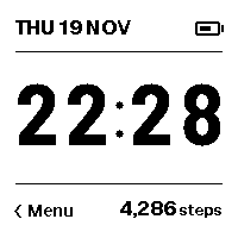

Before you install
- Make a full backup of your watch.
- Connect the Watchy with a USB cable that supports data.
- In desktop Chrome or Edge, choose Install 0.1.0 and select the watch’s serial port.
The installer checks the watch’s chip, flash size, and partition table. It writes the app partition and keeps the bootloader and saved settings.
Checking browser support…
Connection details
The connection log will appear here.
Use this option if the watch is already in ESP32 download mode.